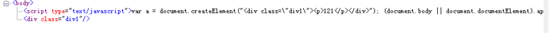

常见的原生javascript DOM操作
2017-06-02 星期五 丁酉年 五月初八
【鸡年】乙巳月 庚申日
宜：开光 出行 嫁娶
忌：会亲友 进人口 修造 动土 起基
1.创建元素
创建元素：document.createElement()
使用document.createElement()可以创建新元素。这个方法只接受一个参数，即要创建元素的标签名。这个标签名在HTML文档中不区分大小写，在XHTML中区分大小写。
var div = document.createElement("div");
使用createElement()方法创建新元素的同时，也为新元素设置了ownerDocument属性，可以操作元素的特性。
div.id = "myDiv";
div.className = "div1";
此时，新元素尚未被添加到文档树中，因此设置各种特性均不会影响浏览器的显示。要添加到文档树，可用appendChild()、insertBefore()、replaceChild()。（稍后讲到）
document.body.appendChild(div);
当把元素添加到文档树中后，这个元素做的任何修改都会实时地反应到浏览器中。
在IE中可以为createElement()方法传入完整的元素标签和属性。(只在IE中兼容)
var div = document.createElement("<div id=\"mydiv\" class=\"div1\"></div>");
// 不能再标签里加其他元素节点或者文本节点，如下的方式和上面的得出的节点一样
var div = document.createElement("<div id=\"mydiv\" class=\"div1\">12212</div>");

创建文本节点 ：document.createTextNode
使用document.createTextNode()来创建文本节点，这个方法接受一个参数：要插入节点的文本。与设置已有文本节点的值一样，作为参数的文本将按照HTML或XML的格式进行编码。
document.createTextNode("121212");
可以添加多个文本节点。假如两个文本节点时相邻的同胞节点，那么两个文本节点会连起来，中间不会有空格。
2.节点关系
（IE9以前不将换行和空格看做文本节点，其他浏览器会）
文本关系如下：
<div id="div1">
<div id="div2">2</div>
<div id="div3">3</div>
<div id="div4">4</div>
</div>
父节点：parentNode
parentNode是指定节点的父节点.一个元素节点的父节点可能是一个元素(Element)节点,也可能是一个文档(Document)节点,或者是个文档碎片(DocumentFragment)节点.
每一个节点都有一个parentNode属性。
对于下面的节点类型: Attr, Document, DocumentFragment, Entity, Notation,其parentNode属性返回null。如果当前节点刚刚被建立,还没有被插入到DOM树中,则该节点的parentNode属性也返回null。
<script type="text/javascript">
var child2 = document.getElementById("div2");
var parent = child2.parentNode;
</script>
子节点：childNodes
childNodes 返回包含指定节点的子节点的集合，该集合为即时更新的集合（live collection）。
即时更新就是对节点元素的任意修改都会立即反映到结果里。
<script type="text/javascript">
var child2 = document.getElementById("div2");
var parent = child2.parentNode;
var allChilds = parent.childNodes;
console.log(allChilds.length) // IE下是3，其他浏览器是7
var nodeAdd = document.createElement("div");
var textAdd = document.createTextNode("这是添加的文本节点");
nodeAdd.appendChild(textAdd);
parent.appendChild(nodeAdd);
console.log(allChilds.length);// IE下是4，其他浏览器是8
</script>
兄弟节点：nextSibling，previousSibling
nextSibling返回某节点的下一个兄弟节点，previousSibling返回某节点的上一个兄弟节点，没有的话返回null。
注意：可能因为元素换行的原因返回的是text节点。
<script type="text/javascript">
var child3 = document.getElementById("div3");
var next = child3.nextSibling;
var previous = child3.previousSibling;
console.log(next); // IE下返回div4，其他返回text
console.log(previous) // IE下返回div2，其他返回text
</script>
第一个或最后一个子节点：firstChild、lastChild
firstChild返回node的子节点中的第一个节点的引用，没有返回null
lastChild返回node的子节点中的最后一个节点的引用，没有返回null
<script type="text/javascript">
var child3 = document.getElementById("div3");
var parent = child3.parentNode;
var first = parent.firstChild; // IE是div2，其他是text
var last = parent.lastChild; // IE是div4，其他是text
</script>
3.节点元素关系
只算元素，不算文本节点。
以下三个方法用法和节点关系完全一样，只是这三个方法只看元素节点，不管因为空格、换行造成的文本节点或者手动加上去的文本节点。
children： 返回所有元素子节点（IE5+、ff3.5、opera3、chrome，但在IE8及以下会将注释节点看成一个元素节点）
以下两个IE9+才支持
nextElementSibling：返回元素的下一个兄弟元素节点
reviousElementSibling: 返回元素的上一个兄弟元素节点
4.节点操作
appendChild()
appendChild()用于向childNodes列表的末尾添加一个节点，并且返回这个新增的节点。
如果传入到appendChild()里的节点已经是文档的一部分了，那结果就是将节点从原来的位置转移到新位置，任何一个节点不能同时出现在文档中的多个位置。
var returnNode = someNode.appendChild(someNode.firstChild); // 返回第一个节点
console.log(returnNode === someNode.firstChild); // false
console.log(returnNode === someNode.lastChild); // true
insetBefore()
insetBefore()可以将节点插入到某个特定的位置。这个方法接受两个参数：要插入的节点和作为参照的节点。
插入节点后，被插入的节点变成参照节点的前一个同胞节点，同时被方法返回。 如果参照节点是null，则与appendChild()执行相同的操作。
// 插入后成为最后一个子节点
var returnNode = someNode.insetBefore(newNode, null);
console.log(returnNode === someNode.lastChild); // true
// 插入后成为第一个子节点
var returnNode = someNode.insetBefore(newNode, someNode.firstChild);
console.log(returnNode === newNode); // true
console.log(returnNode === someNode.firstChild); // true
// 插入到最后一个子节点的前面
var returnNode = someNode.insetBefore(newNode, someNode.lastChild);
console.log(returnNode === someNode.childNodes[someNode.childnodes.length - 2]) // true
替换节点： replaceChild()
replaceChild()接受两个参数：要插入的节点和要被替换的节点。被替换的节点将由这个方法返回并从文档中被移除，同时由要插入的节点占据其位置。
// 替换第一个子节点
var returnNode = someNode.replaceChild(newNode, someNode.firstChild);
使用replaceChild()后，被替换的节点的所有关系指针都会被复制到插入的节点上面。
删除节点：removeChild()
该方法移除节点，接受一个参数，即要移除的节点，同时该方法返回被移除的节点。只能是一个节点，不能是一组节点。
// 移除第一个子节点
var returnNode = someNode.removeChild(someNode.firstChild);
克隆节点：cloneNode(true/false)
返回调用该方法的节点的一个副本。参数表示是否采用深度克隆,如果为true,则该节点的所有后代节点也都会被克隆,如果为false,则只克隆该节点本身，文本或者换行、空格这些不会复制，因为他们都是一个textNode。
注意: 在DOM4规范中(实现于Gecko 13.0(Firefox 13.0 / Thunderbird 13.0 / SeaMonkey 2.10) , 查看 bug 698391),deep是一个可选参数. 如果省略的话, deep参数的默认值为true,也就是说,深度克隆是默认的.如果想使用浅克隆, 你需要将该参数指定为false。
在旧版本的浏览器中, 你始终需要指定deep参数。
克隆一个元素节点会拷贝它所有的属性以及属性值,当然也就包括了属性上绑定的事件(比如onclick="alert(1)"),但不会拷贝那些使用addEventListener()方法或者node.onclick = fn这种用JavaScript动态绑定的事件。
注意:为了防止一个文档中出现两个ID重复的元素,使用cloneNode()方法克隆的节点在需要时应该指定另外一个与原ID值不同的ID
var div1 = document.getElementById("div1");
var cloneHtml = div1.cloneNode(true);
document.body.appendChild(cloneHtml);
5.元素选择
HTML代码示例：
<div id="div1">
<p id="div2" class="one" name="nameone">2</p>
<div id="div3">3</div>
<div id="div4" name="div2">4</div>
</div>
querySelector、querySelectorAll(IE8及以上)
Selectors API通过匹配一组选择器的方式来为从DOM中检索Element节点提供一些简单快捷的方法，这比过去必须要在javascript代码中用循环来查找某个你想要的特定元素更快一些。
该规范对于使用Document,DocumentFragment和Element接口的对象都增了两种新方法：
querySelector
返回节点子树内与之相匹配的第一个Element节点。如果没有匹配的节点，则返回null。
querySelectorAll
返回一个包含节点子树内所有与之相匹配的Element节点列表，如果没有相匹配的，则返回一个空节点列表。
注意：由 querySelector()、uerySelectorAll()返回的节点列表不是动态实时的（非live Collection）。这和其他DOM查询方法返回动态实时节点列表不一样。
选择器方法接受一个或多个用逗号分隔的选择器来确定需要被返回的元素。例如，要选择文档中所有CSS的类(class)是warning或者note的段落(p)元素,可以这样写：
var special = document.querySelectorAll( "p.warning, p.note" );
也可以通过ID来查询，例如：
var el = document.querySelector( "#main, #basic, #exclamation" );
执行上面的代码后，el就包含了文档中元素的ID是main，basic或exclamation的所有元素中的第一个元素。
querySelector() and querySelectorAll() 里可以使用任何CSS选择器，他们都不是live Collection：
var notLive = document.querySelectorAll("p");
console.log(notLive);
document.getElementById("div1").removeChild(document.getElementById("div2"));
console.log(notLive);
// 上面两个输出都是输出 `p#div2.one`的引用，没有因为删除了`p`标签而使`notLive`的结果发生变化。
getElementById()
返回一个匹配特定 ID的元素。id是大小写敏感的字符串，代表了所要查找的元素的唯一ID，如果没有则返回null。
如果新建一个元素，还没有插入到文档中，则不能通过该方法获取到。
var notLive = document.getElementById("div2");
console.log(notLive.innerHTML);
document.getElementById("div1").removeChild(document.getElementById("div2"));
console.log(notLive.innerHTML);
// 上面输出都是2，说明getElementById()也是**非**live collection
getElementsByTagName()
document.getElementsByTagName() 方法返回一个实时的包含具有给出标签名的元素们的HTMLCollection。指定的元素的子树会被搜索，包括元素自己。返回的 list 是实时的（live collection），意味着它会随着DOM树的变化自动更新。因此，如果对同一个元素，使用相同的参数，是不需要多次调用document.getElementsByTagName() 的。
Element.getElementsByTagName()的搜索被限制为指定元素的后代而不是document
var live = document.getElementsByTagName("p");
console.log(live[0].innerHTML);
document.getElementById("div1").removeChild(document.getElementById("div2"));
console.log(live[0].innerHTML);
// 第一个输出2，第二个报错，因为无法引用到p标签
getElementsByName()
该方法返回一个实时的nodelist collection，包含文档中所有name属性匹配的标签。这是一个**live collection**。
注意：在IE和opera下，如果某个元素1的name和另一个元素2的id重合，且元素2在元素1的前面，则getElementsByName()会取到元素2。
var live = document.getElementsByName("div2");
console.log(live[0].innerHTML);
document.getElementById("div1").removeChild(document.getElementById("div2"));
console.log(live[0].innerHTML);
// chrome下：全部输出4
// IE下： 第一个输出2，第二个报错。
getElementsByClassName()
该方法返回一个即时更新的（live） HTMLCollection，包含了所有拥有指定 class 的子元素。当在 document 对象上调用此方法时，会检索整个文档，包括根元素。(IE9以下不支持)
要匹配多个class，则className用空格分开。
getElementsByClassName("class1 class2");
var live = document.getElementsByClassName("one");
console.log(live[0].innerHTML);
document.getElementById("div1").removeChild(document.getElementById("div2"));
console.log(live[0].innerHTML);
// 第一个返回2，第二个报错
6.属性操作
setAttribute()
添加一个新属性（attribute）到元素上，或改变元素上已经存在的属性的值。
当在 HTML 文档中的 HTML 元素上调用 setAttribute() 方法时，该方法会将其属性名称（attribute name）参数小写化。
如果指定的属性已经存在，则其值变为传递的值。如果不存在，则创建指定的属性。也可指定为null。如果设置为null，最好使用removeAttribute()。
var div2 = document.getElementById("div2");
div2.setAttribute("class", "new_class");
div2.setAttribute("id", "new_id");
注意：在IE7下，修改了元素的class，如果已有class，则会出现两个class，通过setAttribute()添加的不生效；如果没有class，则添加上class，但这个添加上去的class的样式不会生效。
removeAttribute()
该方法用于移除元素的属性。
var div2 = document.getElementById("div2");
div2.removeAttribute("class");
注意：IE7下无法移除 class 属性
getAttribute()
该方法返回元素上指定属性（attribute）的值。如果指定的属性不存在，则返回 null 或 "" （空字符串）（IE5+都返回null）。
var div2 = document.getElementById("div2");
var attr = div2.getAttribute("class");
console.log(attr);
注意：IE7下不能正确返回class，返回的是null，其他正常。
hasAttribute()
hasAttribute() 返回一个布尔值，指示该元素是否包含有指定的属性（attribute）。
注意：IE7不支持该方法。
自定义属性data-*
html5里有一个data-*去设置获取元素的自定义属性值。
<div id="div1" data-aa="11">
利用div1.dataset可以获得一个DOMStringMap，包含了元素的所有data-*。
使用div1.dataset.aa就可以获取11的值。
同样，通过设置div1.dataset.bb = "22"就可以设置一个自定义属性值。
在不兼容的浏览器里，就使用getAttribute和setAttribute
var div1 = document.getElementById("div1");
var a = null;
if (div1.dataset) {
a = div1.dataset.aa;
div1.dataset.bb = "222";
} else {
a = div1.getAttribute("data-aa");
div1.setAttribute("data-bb", "2222");
}
console.log(a);
7.事件
addEventListener()
addEventListener()将指定的事件监听器注册到目标对象上，当目标对象触发制定的事件时，指定的回调函数就会触发。目标对象可以是 文档上的元素、 document、 window 或者XMLHttpRequest(比如onreadystatechange事件)。
IE8及以下不支持此方法且只有事件冒泡没有事件捕获。IE9开始支持此方法，也就有了事件捕获。
var div1 = document.getElementById("div1");
div1.addEventListener("click", listener, false);
function listener() {
console.log('test');
}
var cloneHtml = div1.cloneNode(true);
document.body.appendChild(cloneHtml);
第一个参数是事件名，第二个是回调函数，第三个参数为true表示捕获，false表示冒泡。
var div1 = document.getElementById("div1");
div1.addEventListener("click", listener1, true/fasle);
function listener1() {
console.log('test1');
}
var div2 = document.getElementById("div2");
div2.addEventListener("click", listener2, true/fasle);
function listener2() {
console.log('test2');
}
有一点要注意的是，当对某一个元素1既绑定了捕获事件，又绑定了冒泡事件时：
当这个元素1并不是触发事件的那个元素2时，则触发顺序会按照先 捕获 后 冒泡 的顺序触发；
当这个元素1就是最底层的触发事件的元素时，则这个元素没有捕获和冒泡的区别，谁先绑定就先触发谁。
var div2 = document.getElementById("div2");
div2.addEventListener("click", listener2, true);
function listener2() {
console.log('test2');
}
div2.addEventListener("click", listener1, false);
function listener1() {
console.log('test1');
}
// 按绑定顺序执行，两个`addEventLister()`颠倒过来则执行顺序也变化
// 如果再对`div1`绑定一个捕获、一个冒泡，则会先触发捕获 再 触发冒泡，与绑定顺序无关
removeEventListener()
与addEventListener()绑定事件对应的就是移除已绑定的事件。第三个参数的布尔值代表解绑的是捕获事件还是冒泡事件。两个事件互不相关。
var div2 = document.getElementById("div2");
div2.addEventListener("click", listener2, true);
function listener2() {
console.log('test2');
}
div2.removeEventListener("click", listener2, true);
注意：只能通过removeEventListener()解绑有名字的函数，对于绑定的匿名函数无法解除绑定。
div2.addEventListener("click", function(){
console.log('test');
console.log(this);
}, true);
div2.removeEventListener("click", function() {
console.log("test");
}, true);
div2.onclick = null;
// 点击div2依然打印出test
注意：这里this指向触发事件的元素自身。
attachEvent()、detachEvent()
IE8及以下使用这两个方法绑定和解绑事件，当然，IE9+也支持这个事件。但这个方法绑定的事件默认为冒泡也只有冒泡。
// 这里需要在事件前加 on
div2.attachEvent("onclick", listener1);
function listener1() {
console.log('test');
console.log(this);
}
div2.detachEvent("onclick", listener1);
和addEventListener()一样，也不能解绑匿名函数。
注意：这里this指向 window。
阻止默认事件和冒泡
标准事件和IE事件中的阻止默认事件和冒泡事件也有很大区别。
var div2 = document.getElementById("div2");
if (div2.addEventListener) {
div2.addEventListener("click", function(e) {
e.preventDefault(); // 阻止默认事件
e.stopPropagation(); // 阻止冒泡
console.log(e.target.innerHTML);
}, false);
} else {
div2.attachEvent("onclick", function() {
var e = window.event;
e.returnValue = false; // 阻止默认事件
e.cancelBubble = true; // 阻止冒泡
console.log(e.srcElement.innerHTML);
});
}
IE8及以下的event是绑定在window上的。（我的IE11里，仿真到IE7、IE8也可以取到标准事件里的 e 对象，估计是升级到IE11的原因）。
自定义事件：createEvent()
createEvent()用于创建一个新的 event ，而后这个 event 必须调用它的 init() 方法进行初始化。最后就可以在目标元素上使用dispatchEvent()调用新创建的event事件了。
createEvent()的参数一般有：UIEvents、MouseEvents、MutationEvents、HTMLEvents、Event(s)等等，分别有对应的init()方法。HTMLEvents、Event(s)对应的都是initEvent()方法。
initEvent(type, bubbles, cancelable)
type表示自定义的事件类型，bubbles表示是否冒泡，cancelable表示是否阻止默认事件。
target.dispatchEvent(ev)
target就是要触发自定义事件的DOM元素
var div1 = document.getElementById("div1");
div1.addEventListener("message", function(){
console.log('test');
}, false);
var div2 = document.getElementById("div2");
div2.addEventListener("message", function(e){
console.log(this);
console.log(e);
}, false);
var ev = document.createEvent("Event");
ev.initEvent("message", false, true); // 起泡参数变为true，div1的事件就会触发
8.获取元素相关计算后的值
getComputedStyle()、currentStyle()
当我们想获取元素计算后实际呈现在页面上的各个值，就用这两个方法。IE8及以下用currentStyle(),IE9+及其他标准浏览器用getComputedStyle()。
var div2 = document.getElementById("div2");
var result = "";
if (window.getComputedStyle) {
result = (window || document.defaultView).getComputedStyle(div2, null)['cssFloat'];
} else {
result = div2.currentStyle["styleFloat"];
}
console.log(result);
// document.defaultView返回document对象所关联的window
这两个方法在不同的浏览器里差距也很大。
比如float属性：
getComputedStyle： IE9以上需要用cssFloat，其他标准的用float
currentStyle： IE8及以下可用styleFloat或者float。
比如height属性：
假如未设置height值，标准浏览器里能计算出高度值，而currentStyle计算出来是auto`。
上面的例子getComputedStyle是用键值去访问的，也可用getPropertyValue()去访问。（IE8、IE7不支持）
null
getBoundingClientRect()、getClientRects()
getBoundingClientRect()该方法获得页面中某个元素的上、右、下、左分别相对浏览器视窗的位置。getBoundingClientRect是DOM元素到浏览器可视范围的距离（到浏览器顶部而不是文档顶部）。该函数返回一个Object对象，该对象有6个属性：top,lef,right,bottom,width,height；这里的top、left和css中的理解很相似，width、height是元素自身的宽高，但是right，bottom和css中的理解有点不一样。right是指元素右边界距窗口最左边的距离，bottom是指元素下边界距窗口最上面的距离。
getClientRects()是返回一个ClientRectList集合。
var div1 = document.getElementById("div1");
var rects1 = div1.getClientRects();
var rects2 = div1.getBoundingClientRect();
console.log(rects1[0].top);
console.log(rects2.top);

微信打賞

支付寶打賞